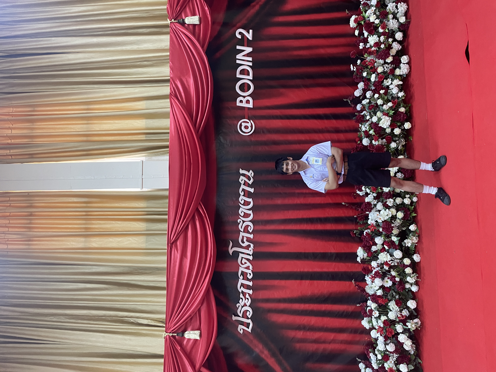

Portfolio Website
ทดลองทำ Portfolio Website ของตัวเอง โดยเรียนด้วยตัวเอง และเ้าร่วมการเรียน Hero Website ss2 ของ Marian
Online
สิ่งที่ได้จากกิจกรรม : ทักษะการสร้าง Website และการใช้ Html 5, Css, Javascript, font awesome, Boostrap
Git และ Vercel แบบ basic
คณะกรรมการนักเรียน
เข้าร่วมคณะกรรมการนักเรียนโรงเรียนเตรียมอุดมศึกษาน้อมเกล้า ได้ทำหน้าที่ดูแลรับผิดชอบกิจกรรมต่างๆ
ของโรงเรียน
ประสานงานกับบุคคลภายนอก ทำงานเบื้องหลัง
สิ่งที่ได้จากกิจกรรม : ทักษะการทำงานร่วมกันเป็นทีม ทักษะการแก้ปัญหาเฉพาะหน้า ทักษะการสื่อสาร
ทักษะการวางแผน
ความรับผิดชอบ ความเสียสละ ใจอาสา ความภาคภูมิใจ

ประกวดโครงงาน
วันที่ 13 ธันวาคม 2565 เข้าร่วมประกวดโครงงานประเภทซอฟแวร์ระดับมัธยมศึกษาตอนปลาย ณ โรงเรียนบดินทรเดชา
(สิงห์ สิงหเสนี)
สิ่งที่ได้จากกิจกรรม : ทักษะการทำงานร่วมกันเป็นทีม ทักษะการสื่อสาร ทักษะการวางแผน การคิดอย่างเป็นระบบ
กิจกรรมกีฬาสี
วันศุกร์ที่ 11 พฤศจิกายน 2565 เข้าร่วมกิจกรรมกีฬาสี เป็นสตาร์ฟดูแลประจำสี คอยจัดเตรียมงานในสีของตัวเอง
ดูแลความเรียบร้อยในสี และได้เข้าร่วมเดินในขบวนพาเหรด
สิ่งที่ได้จากกิจกรรม : ทักษะการทำงานร่วมกันเป็นทีม ทักษะแก้ปัญหาเฉพาะหน้า ทักษะการสื่อสาร ทักษะการวางแผน
ได้มีคอนเนคชั่นกับเพื่อนต่างรุ่น
ค่ายสภานักเรียน
วันที่ 1-3 พฤษภาคม 2566 เข้าร่วมกิจกรรมค่ายสภานักเรียนในเครือโรงเรียนเตรียมอุดมศึกษาน้อมเกล้า
สิ่งที่ได้จากกิจกรรม : การทำงานร่วมกัน การสร้างสัมพันธ์กับเพื่อนต่างโรงเรียน ความกล้าแสดงออก
การให้ความร่วมมือในกิจกรรมต่างๆ ได้เรียนรู้การทำงานของสภานักเรียนในโรงเรียนอื่นๆ
กิจกรรมปฐมนิเทศ
วันที่ 11 และ 12 พฤษภาคม 2566 เข้าร่วมกิจกรรมปฐมนิเทศน้องๆ ม.1 และ 4
โดยทำหน้าที่ช่วยเหลือครูจัดเตรียมกิจกรรม ร่วมนันทนาการ รับลงทะเบียนเ้าร่วม จัดเตรียมอาหารและน้ำ
สิ่งที่ได้จากกิจกรรม : ความเสียสละ ความเป็นผู้นำ ความกล้าแสดงออก ความอดทน การทำงานเป็นทีม
การแก้ปัญหาเฉพาะหน้า